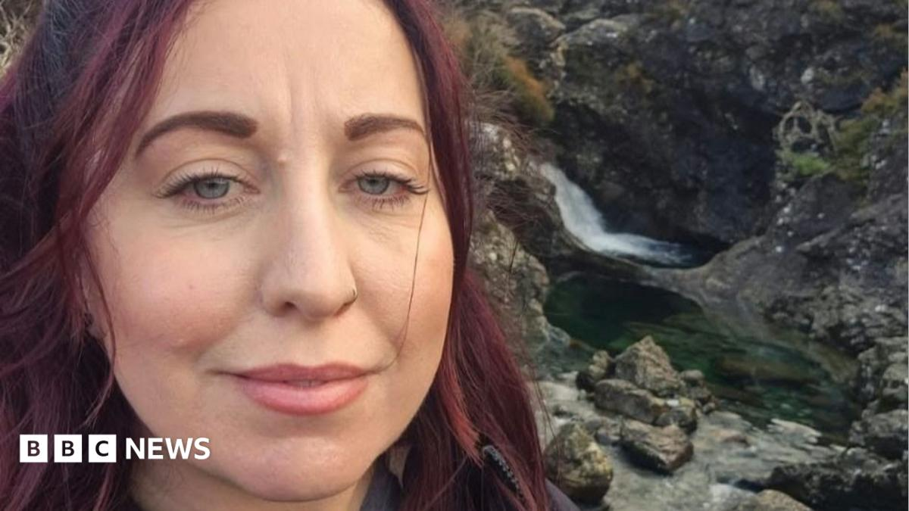

World · 24 Oct 2026
British woman dies after trying to rescue sons swept away at sea in the Bahamas

Nathan Gregory says the loss of childhood sweetheart Leanne "is unimaginable for our family".
Multiple independent publishers are reporting on the same development: British woman dies after trying to rescue sons swept away at sea in the Bahamas.
The available reports place the development in the World category. The accounts were compared for agreement on the central event rather than simply shared names or broad topics.
One of the available reports describes the development this way: Nathan Gregory says the loss of childhood sweetheart Leanne "is unimaginable for our family".
Readers should consult the linked source reports for additional context, updates and details that may change as the story develops.
Sources
This article was produced by the C. O. Eric AI Newsroom from the cited sources. It is published only after automated evidence and safety checks.